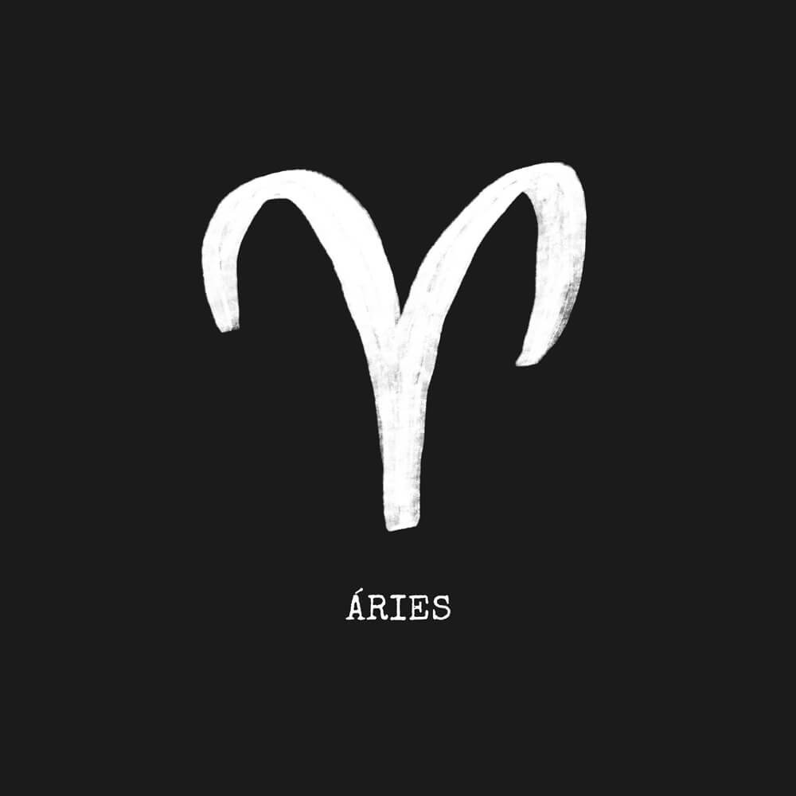
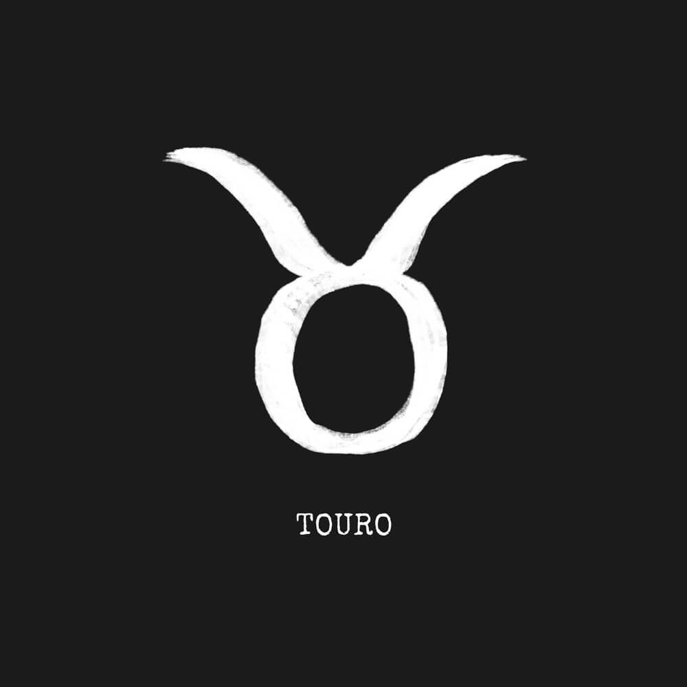
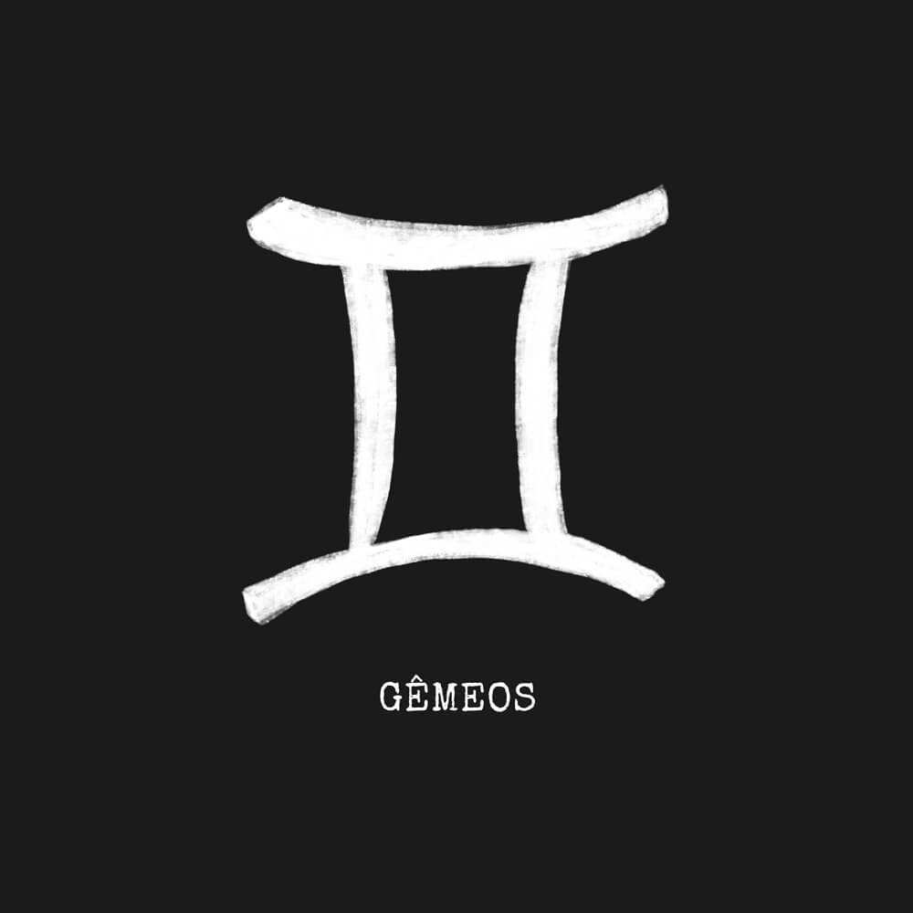
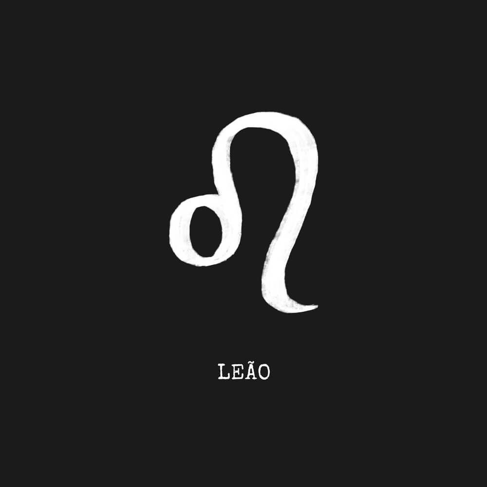
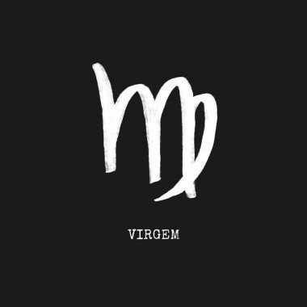
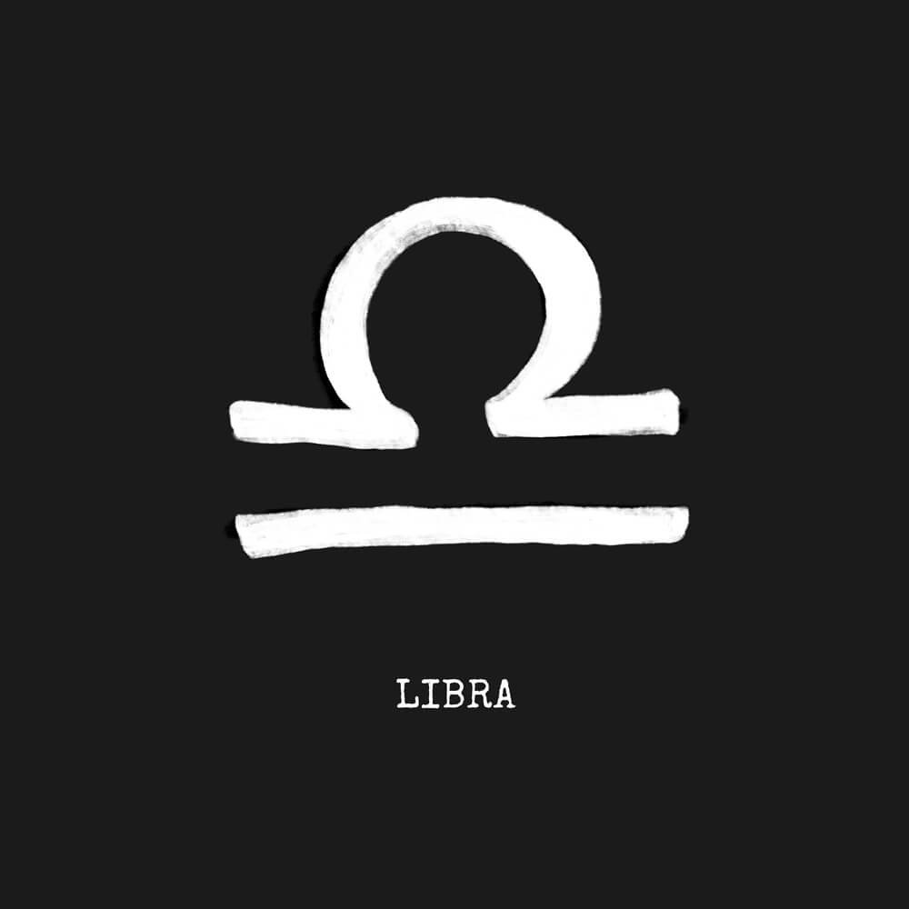
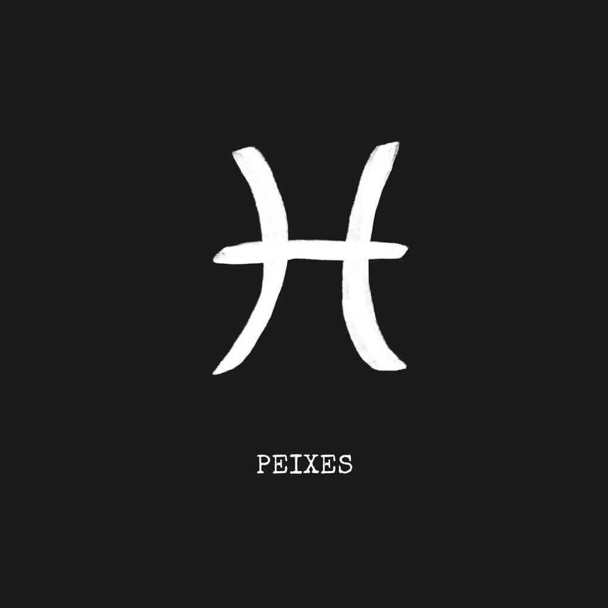

Signos e Horóscopo
Origem dos Signos
Os signos se originaram da mitologia grega e cada um deles faz referência a um mito grego. Cada signo reresenta um espaço de atuação dos planetas, sendo portanto um ângulo da Terra em relação a cada astro. O signo solar é o resultado da interação do nosso planeta com o Sol e é também o mais conhecido, mas existem outros como o signos Lunar, o de Mercúrio, etc.
Signos e suas príncipais características:
Áries
Quem nasceu sob o signo de Áries concentra características como espontaneidade, coragem e energia. Tem uma forte tendência a realizações instantâneas e vive sua vida no agora. É total impulso e tem um forte anseio por existir. Por ser um signo de ação, velocidade e decisão, arianos costumam ser alegres, ter muitas ideias e levantam a moral de quem está a sua volta.
Touro
Quem nasceu sob o signo de Touro é voltado para a realização num plano tangível, material. O ritmo pode até ser lento, mas dificilmente falha. Taurinos vivem o amor, a beleza e o conforto. Adoram tudo que é belo, em todas as expressões de arte, têm muito bom gosto. Nunca se empenham em algo por obrigação. Apesar de gostarem de dinheiro, taurinos acumulam riquezas para o uso próprio, nunca para ostentar.
Gêmeos
Quem nasceu sob o signo de Gêmeos encontra a manifestação viva do poder da linguagem, se comunica bem, provoca reações e anima. Vive em sua própria mente, dialogando e especulando. Elabora raciocínios brilhantes, trazendo luz para os outros. É um signo que tende à interrupções porque se dá a liberdade de mudar, seja nos estudos ou no amor.
Câncer
Quem nasceu sob o signo de Câncer, tem forte ligação com suas origens e com que a maioria das pessoas se sinta à vontade na sua presença. Adora mergulhar fundo no mistérios dos sentimentos e, por isso, ganha a fama de emotivo. É maternal/paternal e abraça os mais próximos como filhos. Pode ter dificuldade de sair do lugar e buscar coisas novas, pois se prende demais à casa e à família.
Leão
O signo de leão é regido pelo elemento Fogo, são aqueles que tem a data de nascimento entre 22 de Julho e 22 de Agosto. A principal característica de um leonino é o entusiasmo, ânimo, vontade, paixão e egocentrismo – são os mais confiantes do zodíaco.
Virgem
Quem nasceu sob o signo de Virgem traz uma simplicidade funcional, que tem por objetivo o aperfeiçoamento do mundo ao seu redor. É também crítico, exigente e perfeccionista. Costuma ser empreendedor e prestativo, um trabalhador exemplar, que gosta da perfeição e está sempre procurando se superar. Pode se preocupar além do comum com a sua saúde e dos outros. É famoso por ter mania exagerada de limpeza e arrumação.
Libra
Quem nasceu sob o signo de Libra pode encontrar o desenvolvimento da consciência através dos relacionamentos pessoais. Para isso, abusa da racionalidade. Possui a rara capacidade de reconhecer no outro um semelhante. Busca equilíbrio e harmonia e, por isso, tem maior talento para viver a dois do zodíaco. Por amar com grande aceitação da outra pessoa, costuma ter menos ciúme e deixa o seu par ser livre.
Escorpião
Quem nasce sob signo de Escorpião é um criador de seu próprio destino, uma pessoa transformadora. Está sempre envolvido com suas emoções que, geralmente, são muito intensas e profundas. Escorpianos têm uma forte intuição e espiritualidade. Quando amam, o relacionamento acontece de forma vigorosa e tem alta importância. É um signo de força, liderança e também generosidade.
Sagitário

Quem nasce sob o signo de Sagitário encontra a dualidade entre o mundo real e o imaginário. É um grande incentivador e adora motivar pessoas. Vai além da mediocridade e quase sempre ultrapassa expectativas. Sagitarianos são mutáveis, gostam de aprender e costumam se interessar por todo tipo de cultura e conhecimento. É um signo de viagens físicas e mentais.
Capricórnio
Quem nasceu sob o signo de Capricórnio tem ambições e metas bem definidas. Reflete uma determinação e atração por desafios. É uma estrela que brilha devagar mas que, ao acender, se sustenta por um longo tempo. O perfil dos capricornianos oferece qualidades como honestidade, seriedade e responsabilidade. O capricorniano não costuma ser muito expressivo, e também não fala muito — mas é certeiro em suas colocações.
Aquário
Quem nasce sob o signo de Aquário é aberto a novas ideias. Abusa das teorias e sua visão vai além do habitual, daí costuma se dizer que Aquário é o signo dos inventores. Tem facilidade para enxergar o que pode dar certo ou não e está sempre mais ligado ao presente e ao futuro, do que ao passado. Também costuma ter mais proximidade com pessoas jovens e pouca paciência com o que é antigo.
Peixes
O pisciano é muito sensível e intuitivo. A compreensão também é um dos atributos de Peixes e vai muito além de compreender as palavras. Eles percebem o propósito de cada pensamento , encaixam todos os sentimentos que motivaram o assunto e juntam os significados explícitos e implícitos. Para nativos deste signo, meia palavra basta. Compreender o outro é ter empatia, é ultrapassar os limites do julgamento.
Horóscopos
Os primeiros registros sobre o horóscopo apareceram a partir do século 7 a.C., quando várias civilizações antigas se dedicavam à observação do céu. Suas populações acreditavam que os astros podiam influenciar a vida humana – especialmente o destino dos recém-nascidos. Entretanto, a versão do horóscopo que conhecemos hoje – uma mistura de influências da astrologia milenar dos babilônios, do conhecimento matemático dos egípcios e da filosofia grega – surgiu provavelmente por volta do século 5 a.C., com a criação do zodíaco. Em sua origem grega, essa palavra significa “círculo de animais” e indicava o grande cinturão celeste que marcava a trajetória do Sol naquela época. Dentro dessa trajetória, cada constelação por onde o astro passava simbolizava um signo. O número de constelações e as figuras que as indicavam variavam para cada civilização.
| Signo | Data |
|---|---|
| Aries | de 21 março a 20 abril |
| Touro | de 21 abril a 20 maio |
| Gêmeos | de 21 maio a 20 junho |
| Câncer | de 21 junho a 22 julho |
| Leão | de 23 julho a 22 agosto |
| Virgem | de 23 agosto a 22 setembro |
| Libra | de 23 setembro a 22 outubro |
| Escorpião | de 23 outubro a 21 novembro |
| Sagitário | de 22 novembro a 21 dezembro |
| Capricórnio | de 22 dezembro a 20 janeiro |
| Aquário | de 21 janeiro a 18 fevereiro |
| Peixes | de 19 fevereiro a 20 março |